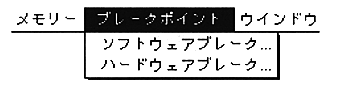
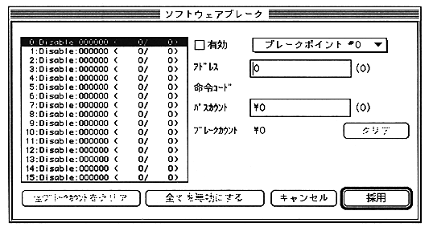
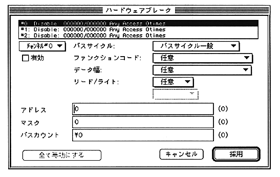

When “Software Break” is selected, the following movable modal dialog is displayed.
Operations equivalent to the console commands B, BE, BC, and BR can be performed.

When “Hardware Break” is selected, the following movable modal dialog is displayed.
Operations equivalent to the console commands HB, HBE, and HBC can be performed.
